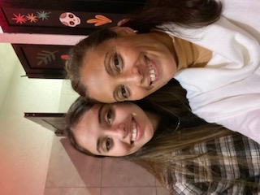

Somos un equipo de madre e hija y nuestra historia comenzo en plena pandemia. El tiempo libre que se nos presentaba en ese momento, nos ayudo mucho a pensar y replantearnos cosas, en plena crisis y pandemia mundial, era momento de hacer algo para cambiar el futuro de nuestra familia. Por eso, una tarde fria de julio, nos planteamos en hacer algo desde casa, que lleve nuestra historia y nuestro aporte humano y casero. A madre, desde siempre le gusto la cocina, tiene ojo y muy buena mano para las cosas dulces, y obvio tambien lo salado. Contamos con una quinta donde tenemos nuestros queridos arboles frutales que nos acompañan hace años. Nos aportan vida. En las epocas de cosecha pasamos dias trabajando para preparar la fruta, lavarla, cocinarla, envasarla y empaquetarla. Despues se dejan dias o meses reposandose para que junte mas sabor.
Por otro lado, tambien trabajamos con productos regionales, traidos de nuestra querida provincia; La Rioja. Elegimos este tipo de productos ya que nos hace sentir como en casda. Trabajamos con productos de primera calidad ya que son de primera mano y de cosechas familiares! Sin hacer tan larga la historia, esto somos, dos personas, madre e hija haciendo todo, desde el plantado y cuidado de nuestros frutales hasta el empaquetado y envio de nuestros productos finalizados. Pasando por todos los lugares por los que tenemos que pasar.
